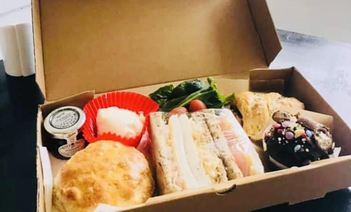
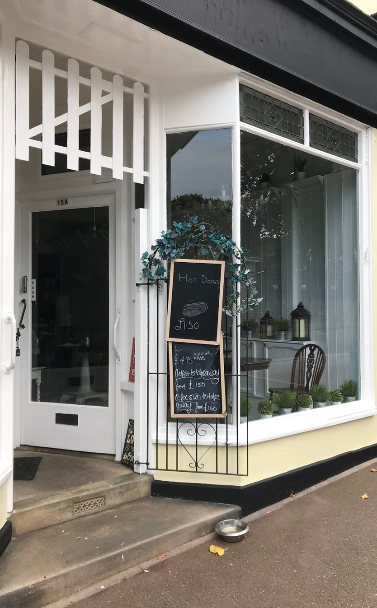

Homemade
Breakfast, lunch, and takeaway-friendly boxes.
English Riviera describes breakfast and lunch with special daily dishes; the site should make that practical offer visible immediately.

15a Ilsham Road · Wellswood · Torquay
A compact visitor page for Ilshams, pulling together the Wellswood cafe story, food photos, social updates, and a map that works before people set off.

Wellswood local
English Riviera lists Ilshams as a Torquay cafe for good quality, homemade, reasonably priced food. Muntham's Wellswood guide calls it a small community cafe with a big heart and mentions homemade food plus specials.
Visit
Public listings place Ilshams at 15a Ilsham Road, Torquay TQ1 2JG. The embedded Google map below can be dragged and zoomed for previewing the Wellswood area.
Name check
English Riviera, Muntham, and the legacy page use the Ilshams name. The Food Standards Agency API returns the same address as The Village Cafe and Bar/Wellswood Kitchen with an FHRS 5 rating dated 15 October 2025.
That means this demo can be pitched as an Ilshams visitor page, but the handoff should ask the owner to confirm whether Wellswood Kitchen is the current registered or trading entity.